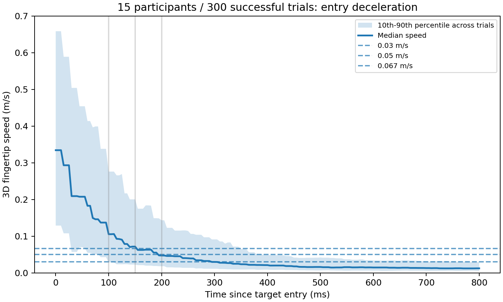
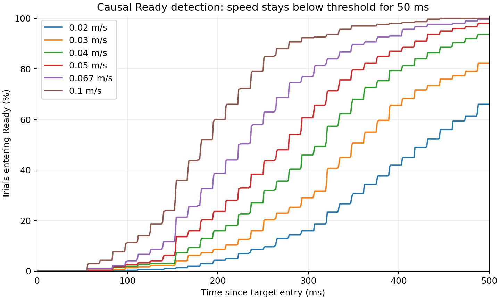

2026-11-11 · 15 名被试代号、300 次成功试次、76,324 个球内样本。
若目标定义为“入球后 200 ms 内至少一次达到低速”，并采用覆盖 90% 试次的示例准则，样本内最低阈值为 0.066573 m/s，向上取三位小数为 0.067 m/s。这可作为快速进入 Ready 的运动学选值依据。
以原始 enter 事件为时间零点，采用实际应用接收间隔重建的三维食指速度。读取未平滑、未 IQR 删点的连续有效样本，不使用旧速度或加速度分段来定义新准备状态。对任意候选 v，计算首次观测到速度≤v 的时刻 τ(v)。在要求覆盖比例 c 的条件下，选择满足 P(τ(v)≤T)≥c 的最低 v。
每位被试均有20次试次，因此总体试次覆盖率与被试等权平均覆盖率相同。逐被试结果另列，不能将总体90%理解为每个人90%。分析使用应用接收时间，未测量硬件采集到显示的总延迟。P10–P15真实身份沿用既有待核记录。
| 时间目标 | 覆盖90%的最低 v | 覆盖95%的最低 v |
|---|---|---|
| 100 ms | 0.183195 m/s | 0.221680 m/s |
| 150 ms | 0.108095 m/s | 0.137036 m/s |
| 200 ms | 0.066573 m/s | 0.077631 m/s |
| 准备判据 | 中位耗时 | P90耗时 | 100/150/200 ms内达标率 |
|---|---|---|---|
| 首次达到低速 | 111.1 ms | 195.0 ms | 49.0% / 71.3% / 90.7% |
| 连续低速至少50 ms | 223.5 ms | 361.7 ms | 4.0% / 11.7% / 38.7% |
50 ms 是用于敏感性分析的工程确认时长，而不是文献验证的稳定知觉时长。要求连续50 ms低速且90%试次在200 ms内达标，阈值需提高至约0.2033 m/s；提高阈值会改变“低速”的含义，不能只为达标而提高。
0.067 m/s 的瞬时低速判据在200 ms内的逐被试覆盖率为75%–100%。按其余14人拟合阈值、留1人评估，200 ms/90%条件的平均留出覆盖率约90.3%，最差被试70%；此为当前任务的内部验证。
首次≤0.067后，6/300次在接下来的100 ms出现≥0.375的速度样本；连续低速50 ms后为0/300。这些是离线速度条件候选，不是实机完整Speed系统的误提交率；现有任务没有实际触发/取消意图标签。


30份原始continuous/events文件SHA-256与既有清单一致；全部76,324行速度和试次相对时间由原始坐标、完整精度事件独立复核。两种独立算法核对15,600组候选×试次计算。